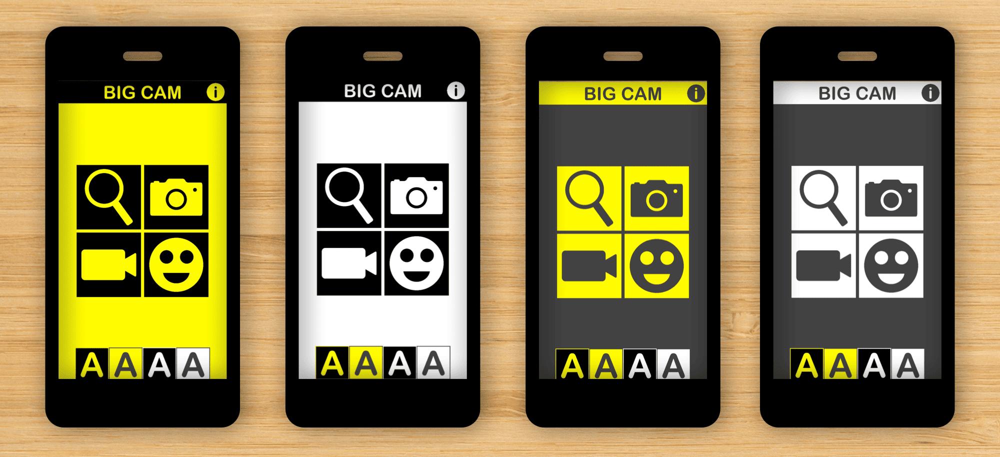
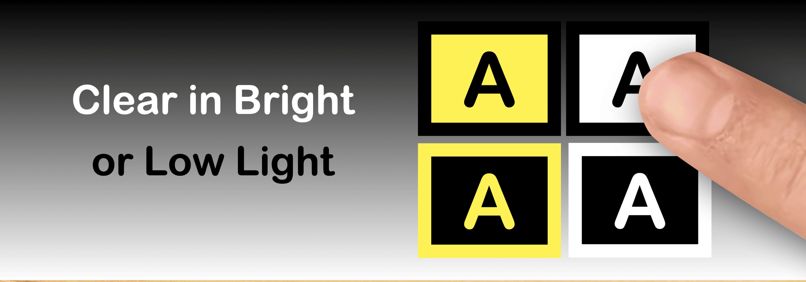
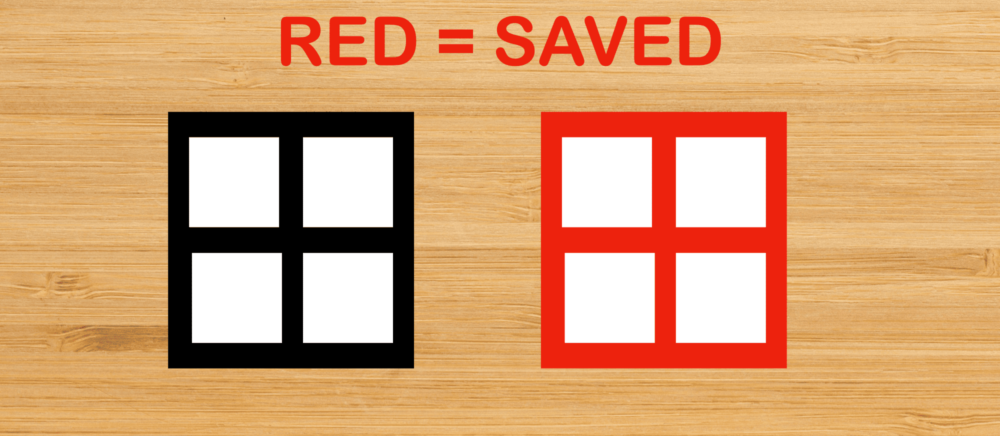
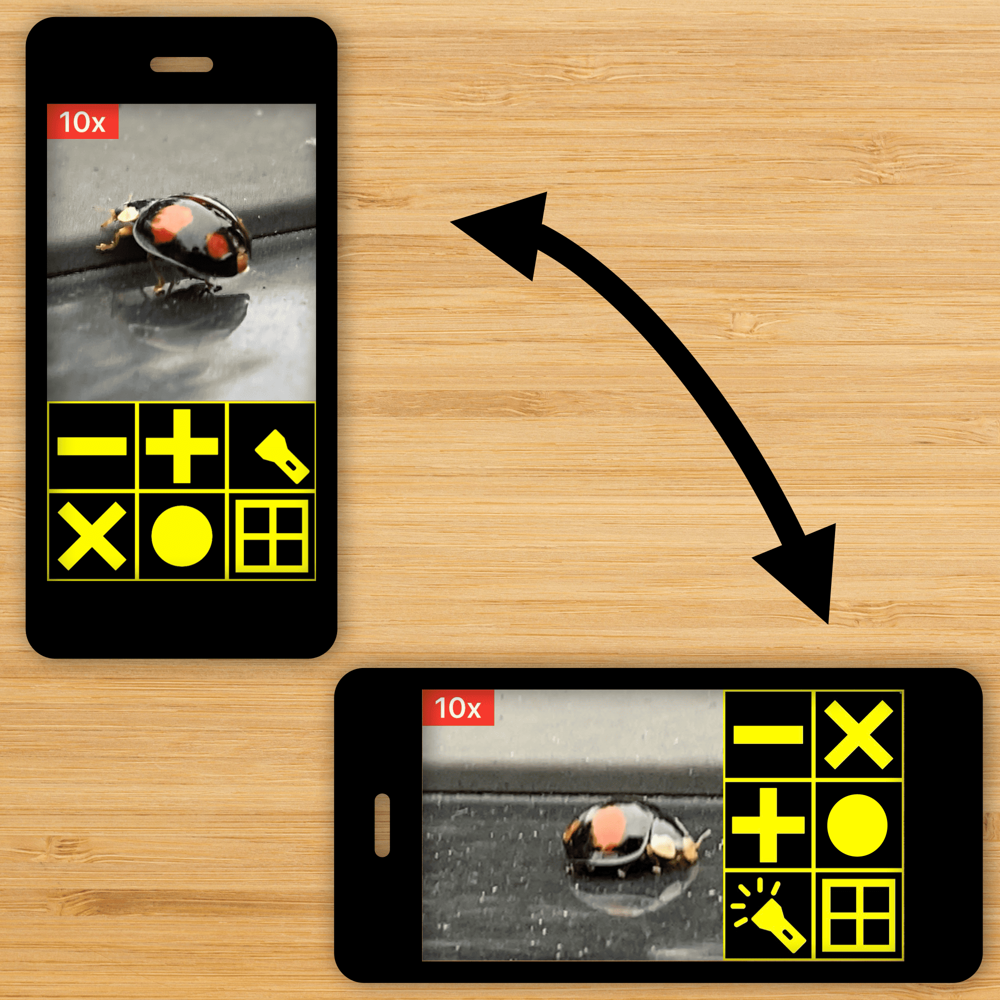
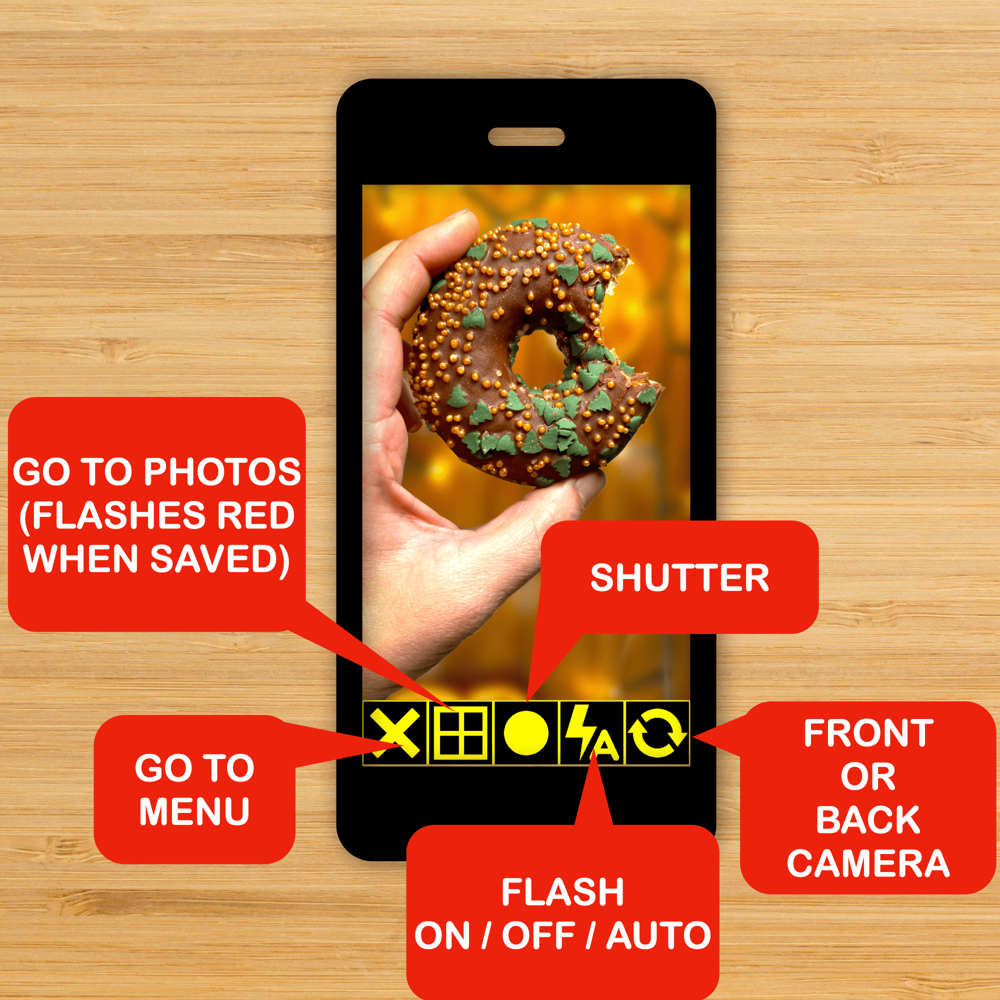
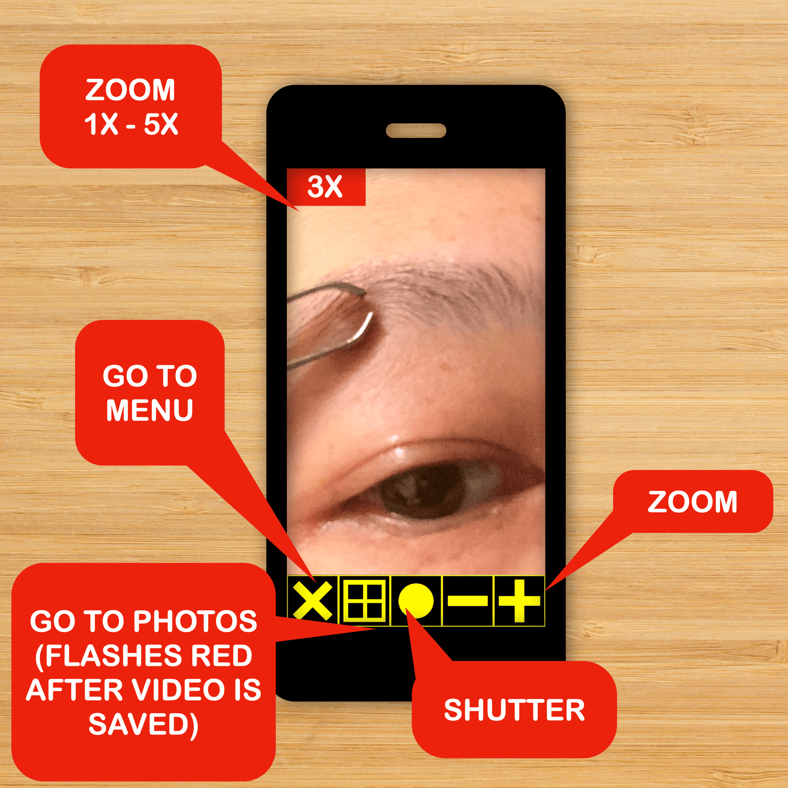
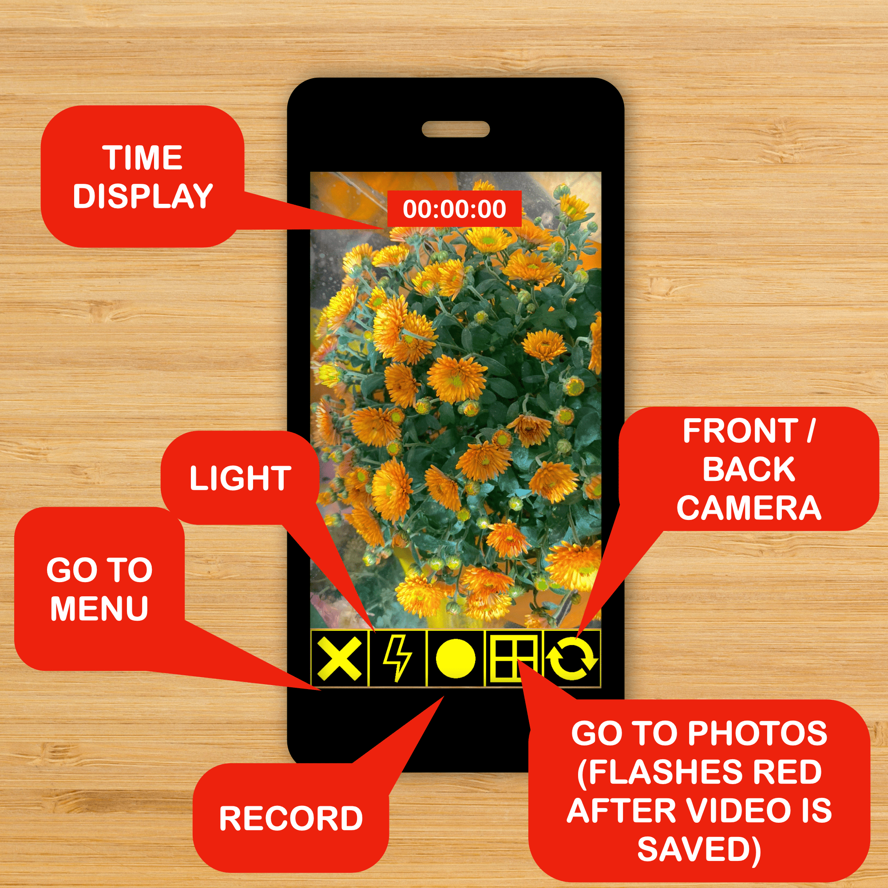
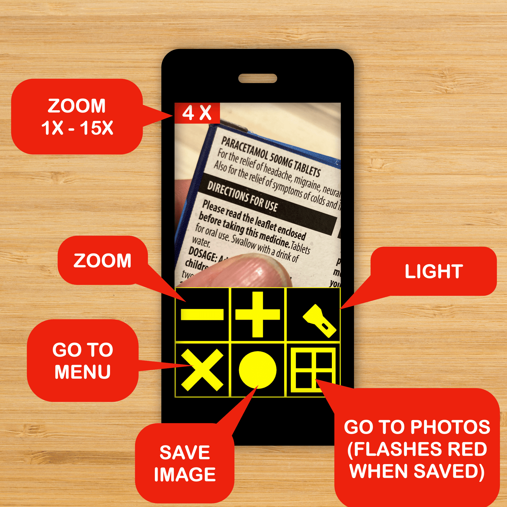
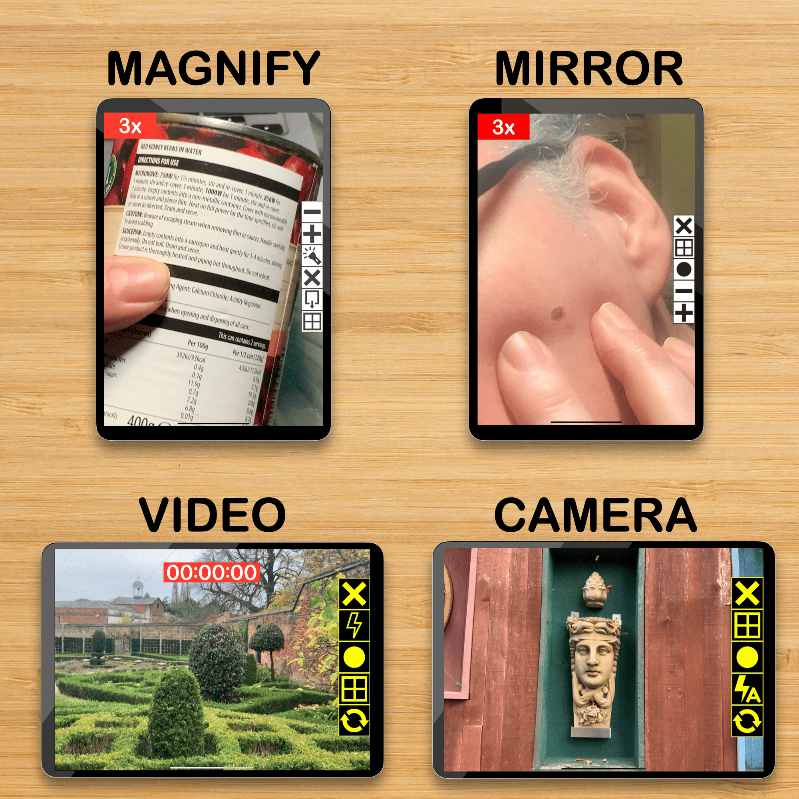

Big Cam is a Large Print Camera App for Visual Impairment Aid

Big Cam is a 4-in-1 Camera App. Use your iPhone or iPad as a Magnifying Glass, a Camera, a Video Recorder, and a Mirror. This App has 4 color modes that have good contrast in Bright or Low Light.
Big Buttons for Easy Use

All buttons are big for easy tapping.
Save Images to Photo Library

All images can be saved to your Photo Library. The save button flashes red to confirm that your image is saved.
Low Dexterity Mode

Use it in portrait or landscape mode for low dexterity needs.
Camera Mode

Camera Mode, this is just like any other camera but with Large Clear Buttons in the color mode of your choice.
Mirror Mode

Mirror Mode, zoom from 1x - 5x, handy for makeup checks or examining health issues. The enlarged image can be saved.
Video Recorder Mode

Video Recorder Mode, with a large time display and adjustable lighting.
Magnifier Mode

Magnifier Mode, zoom from 1x - 15x with the back camera, useful for reading tiny print. Save the enlarged picture to your library.
iPad View

Here is what it looks like on iPad.